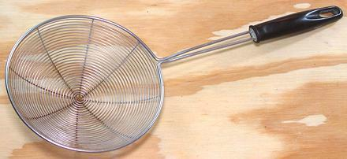

Spider Skimmer

A spider skimmer is the very best device for scooping things out of
hot oil, taking far less oil with it than any other device. If I'm
frying something in very shallow oil, I often use the flat slotted
turner to load items into the spider to drain a few seconds before
transferring them to drain on paper towels.
The spider is also great for scooping things out of boiling water.
Water slips through it so smoothly that floating items have no
warning until it's too late to get away.
The all stainless steel type shown in the photo is less picturesque
than the traditional Chinese versions made with laced wire, but is far
easier to clean. This type is now commonly available in Asian markets
here in Los Angeles.
More on Kitchen Gear.
ke_spider1 151116 - www.clovegarden.com
©Andrew Grygus - agryg@clovegaden.com
Photos on this
page not otherwise credited are © cg1 -
Linking to and non-commercial use of this page permitted